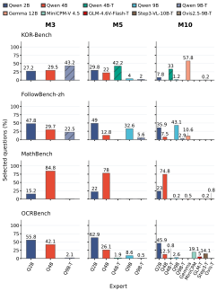
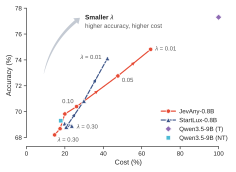

Read the question and the cards.
The compact decision model sees the full question, its images, and cards describing the available experts. A new expert enters as a new card.
Continual Learning to Route
across Evolving Tasks and Models
New tasks. New experts. One adaptive policy.
A compact multimodal router learns from task feedback, keeps earlier capabilities, and selects the right expert for each question.
A routing policy should keep learning as the questions and the available models change. AdaptRouter makes the expert pool part of the input.
The compact decision model sees the full question, its images, and cards describing the available experts. A new expert enters as a new card.
In the main and continual studies, sampled routing decisions receive native task scores. A quality-first advantage limits how cost can alter the learning signal.
Each stage starts from the previous policy and optimizer state, trains only on newly introduced data, and is evaluated on all tasks seen so far.
One router prefill. One selected expert. The expert generates the complete answer.
The main and continual studies use task-feedback policy optimization. The API extension uses full-information expert scores and costs to form soft targets (λ = 0.02, τ = 0.05), with a regret term. API results are not presented as an online RL experiment.
Five benchmarks arrive over four stages. The policy learns only from the new stage’s questions, without replaying earlier training data.
Changes are relative to each task’s first observed stage. Fixed experts are not continually trained. Point estimates are reproduced from the manuscript; no confidence intervals are implied.
Across the StartLux variants, no earlier task falls more than 0.4 points from a previous peak. The full-finetuning variant ends at 92.20% on MATH-500, where it started.
The same card-conditioned design is trained on pools of three, five, and ten experts. A frozen-backbone JevAny-style router learns its pointer head from feedback.
Four-task study; matched reward and update budget. This is a separate test suite from the 15-benchmark main comparison.
From 66.7% with three experts to 75.5% with ten. At 5% exploration, held-out accuracy reaches 77.2%, within 1.9 points of the best tested budget.
The same fixed 10% of question families is held out across exploration budgets. Each run uses 500 updates. “All” and “Held-out” refer to different evaluation subsets and are kept separate in the downloadable data.

Explore each benchmark, compare routing methods, and inspect the quality–cost trade-off. The open-weight and API suites retain their own evaluation and cost definitions.
Both suites report request-weighted averages. The API suite has 10,363 test questions. Partial max-effort reference rows are externally reported results, excluded from the complete-cohort scatter plot and ranking.
API cost is the list-price comparison cost of selected successful expert answers, excluding training, judges, local router compute, and unknown failed-attempt invoices. Open-weight cost is a parameter-weighted token proxy relative to Qwen3.5-9B (thinking).
Router-R1 is a single-choice PPO adaptation, not the original multi-call system. Its $283.26 cost follows the documented conservative high-side accounting. The API AdaptRouter rows include the reported benchmark-specific training updates.
On LongBench v2, the manuscript reports $9.54 for the selected StartLux routes versus $112.28 for Gemini alone. Request share and cost share tell different stories.
Ablations examine the learning signal and visual inputs. Timing and scale studies show the practical cost of making the routing decision.
Four-task ablation, not the 15-benchmark main suite. Full: one training GPU; ablations: eight. The evaluation contains the documented 400-question training overlap.
Mean time per question, seconds. Expert execution is reported in GPU seconds; these observations do not imply a controlled end-to-end speedup.

Matched LoRA budget on M5. Latency includes preprocessing. Order consistency is pairwise agreement across five cyclic candidate orders.
Read the working manuscript, download the reported numbers, and reuse the figures. All visualizations on this page are generated from the bundled result tables.
Archived paper snapshot · PDF
PDFSeven studies · structured data
JSONSnapshot, hashes and metric notes
JSONOriginal vector figure from the paper
PDFAnonymous working manuscript, November 2026. Public bibliographic identifiers and a research-code release are not listed in this archived snapshot.
AdaptRouter: Continual Learning to Route across Evolving Tasks and Models. Anonymous authors. Working manuscript, November 2026.